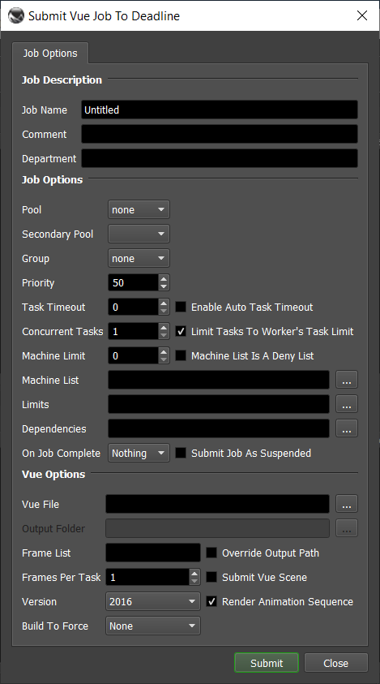

Vue¶
Job Submission¶
You can submit jobs from within Vue, or you can submit them from the Monitor.
Submitting from Vue¶
For the following steps, you will need to make some substitutions as-per the following table:
Placeholder |
Replacement |
|---|---|
|
The path to the C:\Program Files\Thinkbox\Deadline10\bin
|
|
The version of Vue you are configuring. Possible values are: |
Single Frame Submission¶
Open a Windows command prompt. Press
CTRL+RType
cmdPress
RETURNType in:
%DEADLINE_BIN%\deadlinecommand.exe -GetRepositoryFilePath "scripts\submission\VueSubmission.py"
Make note of the path that is output for future steps.
In Vue, select
Render→Render OptionsFind the Renderer section, select RenderBull/RenderNode Network, then press the
Editbutton.In the
Optionsdialog that pops up, enter the submission command using the template below"%DEADLINE_BIN%\deadlinecommand.exe" -executescript "%VUE_SUB_PATH%" "[FILE_PATH]" "[SCENE_NAME]" "[NUM_FRAMES]" %VUE_VERSION%
You will need to replace the
%DEADLINE_BIN%and%VUE_VERSION%placeholders as described in the table above. Replace%VUE_SUB_PATH%with the path that is output in step 1. You can leave the[FILE_PATH],[SCENE_NAME], and[NUM_FRAMES]placeholders unchanged; they will be automatically substituted by Vue when submitting.You can also enter the folder you want the temporary Vue scene file saved in during submission. By default, you should be able to leave this blank. Press
OKwhen finished.Press
Renderto bring up the submission dialog.
Animation Submission¶
Open a Windows command prompt. Press
CTRL+RType
cmdPress
RETURNType in:
%DEADLINE_BIN%\deadlinecommand.exe -GetRepositoryFilePath "scripts\submission\VueSubmission.py"
Make note of the path that is output for future steps.
In Vue, select
Animation→Animation Render Options,Find the Renderer section, select Network Rendering/RenderNode Network, then press the
Editbutton.In the
Optionsdialog that pops up, enter the submission command using the template below"%DEADLINE_BIN%\deadlinecommand.exe" -executescript "%VUE_SUB_PATH%" "[FILE_PATH]" "[SCENE_NAME]" "[NUM_FRAMES]" %VUE_VERSION%
You will need to replace the
%DEADLINE_BIN%and%VUE_VERSION%placeholders as described in the table above. Replace%VUE_SUB_PATH%with the path that is output in step 1. You can leave the[FILE_PATH],[SCENE_NAME], and[NUM_FRAMES]placeholders unchanged; they will be automatically substituted by Vue when submitting.You can also enter the folder you want the temporary Vue scene file saved in during submission. By default, you should be able to leave this blank. Press
OKwhen finished.Press
Render Animationto bring up the submission dialog.
Submitting from the Monitor¶
To submit a Vue job from the Deadline Monitor, select Submit -> 3D -> Vue from the menu bar.
Submission Options¶
The general Deadline options are explained in the Job Submission documentation, and the Draft/Integration options are explained in the Draft and Integration documentation. The Vue specific options are:
Vue File: The Vue scene file to be rendered.
Output Folder: If Override Output Path is enabled, the rendered images will be saved in this folder.
Override Output Path: Enable to override where the rendered images are saved.
Render animation sequence: If checked, will render the animation. Otherwise, Vue will render the single frame that the scene was set to when saved.
Version: The version of Vue to render with.
Build To Force: Force 32 bit or 64 bit rendering.
Plugin Configuration¶
You can configure the Vue plugin settings from the Monitor. While in power user mode, select Tools -> Configure Plugins and select the Vue plugin from the list on the left.

Render Executables
Vue Executable: The path to the Vue executable file used for rendering. Enter alternative paths on separate lines. Different executable paths can be configured for each version installed on your render nodes.
FAQ¶
Which versions of Vue are supported?
Vue 6 and later are supported (Infinite and xStream editions).
I have Vue render node licenses, but when I render with Deadline, I get the error “No serial number found”.
If you have render node licenses for Vue, you need to use the *RenderNode.exe executable (ie: Vue 9 xStream RenderNode.exe) instead of the StandaloneRenderer.eon executable for rendering.
Error Messages and Meanings¶
This is a collection of known Vue error messages and their meanings, as well as possible solutions. We want to keep this list as up to date as possible, so if you run into an error message that isn’t listed here, please contact Deadline Support and let us know.
Unable to initialize application - Check render log for more information.
Check the render log for the job to see if this additional information in printed out:
STDOUT: Initializing...Error STDOUT: No serial number found STDOUT: Unable to initialize application. Exiting.
If this is the case, it means that Vue can’t get a license. If you have render node licenses for Vue, you need to use the *RenderNode.exe executable (ie: Vue 9 xStream RenderNode.exe) instead of the StandaloneRenderer.eon executable for rendering.

{kind=link}